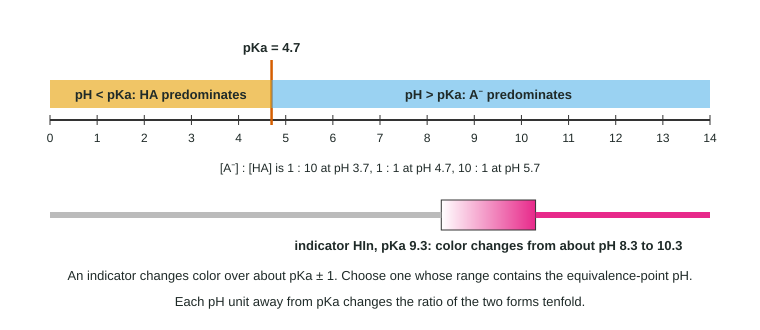

A weak acid in solution is always a mixture of two forms: the protonated form HA and the deprotonated form A⁻. Which form is in the majority depends on one comparison: is the pH of the solution above or below the acid's pKa? This topic makes that comparison quick and shows its most practical use, choosing an indicator for a titration.
Comparing pH with pKa
Start from Ka and rearrange it to give the ratio of the two forms:
Ka = [H₃O⁺][A⁻]/[HA] → [A⁻]/[HA] = Ka/[H₃O⁺] = 10^(pH − pKa)
This holds in any solution that contains the acid, whatever else set the pH. Read it in three cases:
| pH compared with pKa | [A⁻]/[HA] | Predominant form |
|---|---|---|
| pH = pKa − 2 | 1 : 100 | HA (protonated) |
| pH = pKa − 1 | 1 : 10 | HA (protonated) |
| pH = pKa | 1 : 1 | neither: equal amounts |
| pH = pKa + 1 | 10 : 1 | A⁻ (deprotonated) |
| pH = pKa + 2 | 100 : 1 | A⁻ (deprotonated) |

A memory aid that works: low pH, lots of protons, so the acid keeps its proton. High pH, few protons, so the acid gives its proton up. The figure shows this as a line along the pH scale.
Worked example 1. Lactic acid has pKa 3.86. In muscle tissue at pH 7.06, what is the ratio [lactate]/[lactic acid], and which form predominates?
Step 1. pH − pKa = 7.06 − 3.86 = 3.20.
Step 2. [A⁻]/[HA] = 10^3.20 = 1,600. (Two decimal places in the exponent, two significant figures.)
Step 3. pH is above pKa, so lactate, the deprotonated form, predominates by about 1,600 to 1. This is why biologists talk about "lactate" rather than "lactic acid".
The same rule works for a base and its conjugate acid, using the pKa of the conjugate acid. For an amine with conjugate acid pKa 10.6, at pH 7.4 the protonated form (–NH₃⁺) predominates by about 1,600 to 1.
A molecule with two groups, such as an amino acid, follows the rule for each group separately: compare the pH with each pKa in turn.
Indicators are weak acids
An acid-base indicator is a weak acid, HIn, in which the protonated and deprotonated forms are different colors. Phenolphthalein's HIn is colorless and its In⁻ is pink. Your eye sees the color of whichever form is in at least about a tenfold majority, so the visible change happens between about pH = pKa − 1 and pKa + 1.
| Indicator | pKa | Color change | Approximate range |
|---|---|---|---|
| Methyl orange | 3.5 | red → yellow | 2.5 to 4.5 |
| Bromocresol green | 4.7 | yellow → blue | 3.7 to 5.7 |
| Bromothymol blue | 7.1 | yellow → blue | 6.1 to 8.1 |
| Phenolphthalein | 9.3 | colorless → pink | 8.3 to 10.3 |
(Real indicators' ranges vary a little from pKa ± 1, and the exam gives you the values it wants you to use.)
Choosing an indicator for a titration
The point of an indicator is to change color at the equivalence point. So: find the pH at equivalence, then pick an indicator whose pKa is close to it.
Worked example 2. Choose an indicator from the table for (a) acetic acid titrated with NaOH and (b) ammonia titrated with HCl, both 0.100 M.
(a) At equivalence the flask holds acetate, a weak base, so the pH is above 7: 8.72 (topic 8.5). Phenolphthalein (pKa 9.3, range 8.3 to 10.3) changes on the steep rise. Bromothymol blue would turn slightly early; methyl orange would turn in the buffer region, far too early.
(b) At equivalence the flask holds NH₄⁺, a weak acid, so the pH is below 7: 5.28. Bromocresol green (pKa 4.7) is the match; phenolphthalein would change in the buffer region, long before equivalence.
For a strong acid with a strong base, the steep rise runs from about pH 4 to 10 with a single drop, so bromothymol blue, phenolphthalein and others all give the same end point within a fraction of a drop.
When an explanation is asked for, connect the two numbers: "Phenolphthalein is suitable because its pKa (9.3) is close to the pH at the equivalence point (8.7), so it changes color on the steep part of the curve." Saying only "it changes color in basic solution" does not earn the point.
Where students lose points
- Reversing the rule: below pKa the acid is protonated.
- Choosing an indicator that changes at pH 7 for every titration.
- Comparing an indicator's pKa with the starting pH or the half-equivalence pH instead of the equivalence pH.
- Treating a ratio of 1 : 10 as 10% (it is 1 part in 11, about 9%).